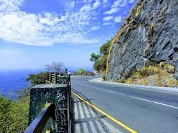
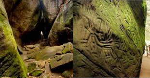

Wayanad

Wayanad is an Indian district in the north-east of Kerala state with administrative headquarters at the municipality of Kalpetta. It is set high on the Western Ghats with altitudes ranging from 700 to 2100 meters. The district was formed on 1 November 1980 as the 12th district in Kerala by carving out areas from Kozhikode and Kannur districts. About 885.92 sq.km of area of the district is under forest. Wayanad has three municipal towns—Kalpetta, Mananthavady and Sulthan Bathery. There are many indigenous tribals in this area.
Places to visit
1.Lakkidi View Point
Monkeys frequent this compact lookout point along a highway with mountain & valley views.
2.Edakkal Caves
Edakkal Caves also Edakal, are two natural caves at Edakkal, around 120 km south-west of Mysuru, in Wayanad district of Kerala. The caves are situated 1,200 m above sea level on Ambukutty Mala, on the Mysore Plateau, in the Western Ghats.